References are AI-generated rasters: they guide layout, rhythm, palette and hierarchy; the written spec wins.
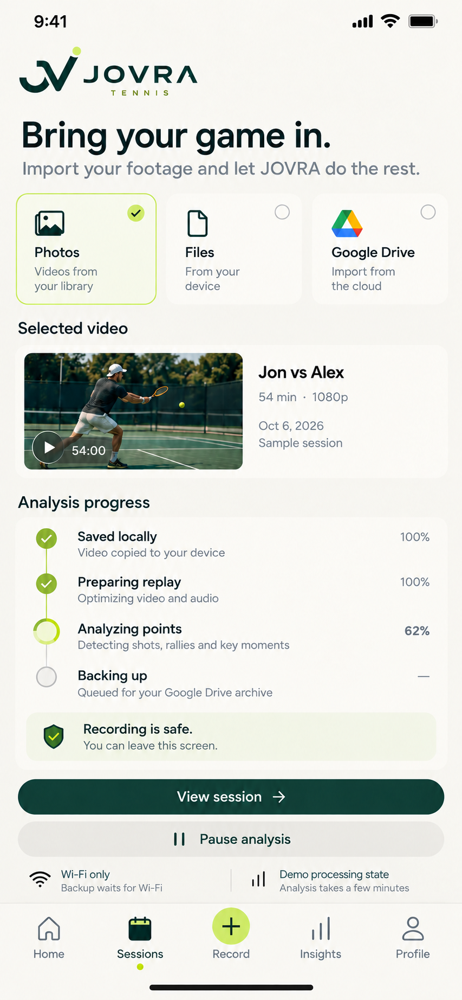
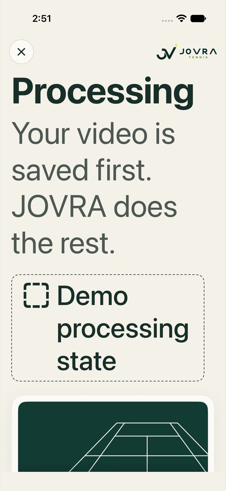
Reviewer: Claude (T27 agent) — AX5 demo: the dashed "Demo processing state" label wraps inside a rounded outline; no clipping.
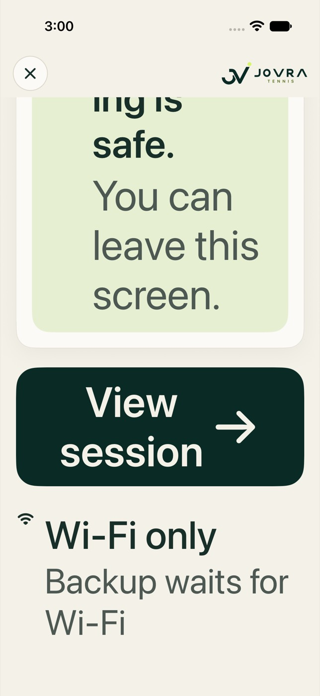
Reviewer: Claude (T27 agent) — AX5: buttons grow with their labels and the status row stacks vertically; matches the reference order.
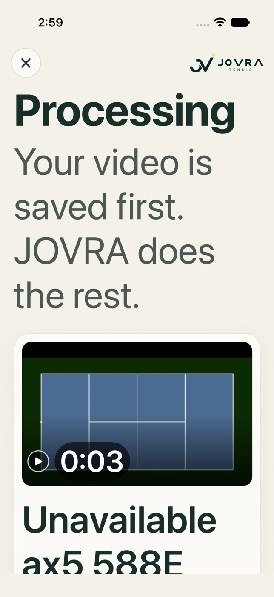
Reviewer: Claude (T27 agent) — AX5: the video card stacks the poster above the text and the title shrinks to fit rather than run off-screen; no clipping (textClipped audit passed); deliberate deviation from the side-by-side card at default size.
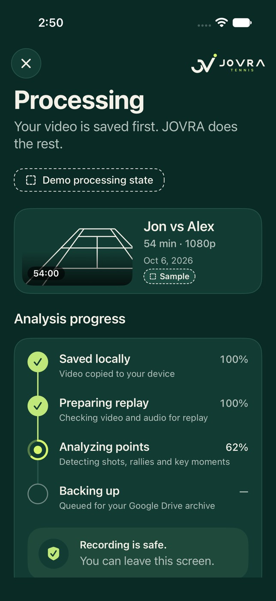
Reviewer: Claude (T27 agent) — dark variant of the demo; matches.
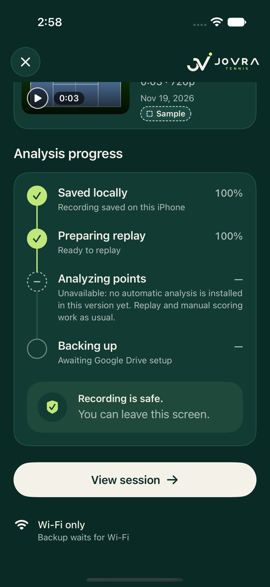
Reviewer: Claude (T27 agent) — dark primary button inverts to ivory as the design system specifies; matches.
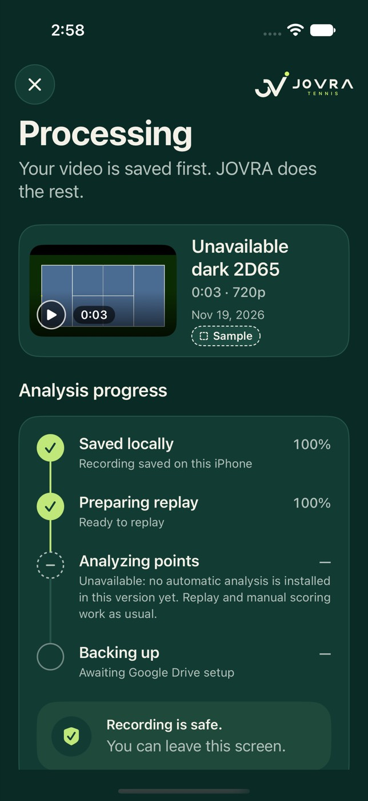
Reviewer: Claude (T27 agent) — dark tokens on forest; matches the light composition; Sample badge stays on the fixture session.
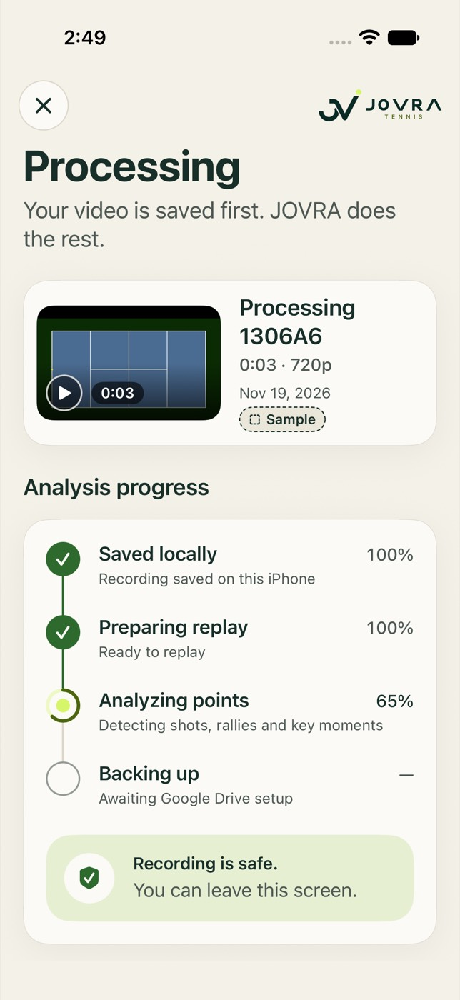
Reviewer: Claude (T27 agent) — matches: video card, four-stage timeline with checks, active ring and percentages, "Recording is safe. You can leave this screen." Deviations: title "Processing" (route name) instead of "Bring your game in." (import screen's heading); preparing-replay helper reads "Ready to replay" / "Checking video and audio for replay" instead of "Optimizing video and audio" because the stage only verifies playability and optimizes nothing (hard rule 1); the backup helper says "Awaiting Google Drive setup" because no archive is connected (the issue's copy).
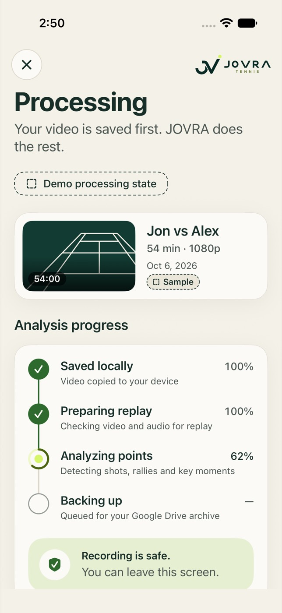
Reviewer: Claude (T27 agent) — matches the brief's demo: "Jon vs Alex", "54 min · 1080p", Oct 6, 2026, Sample badge, the 100/100/62/— timeline and "Queued for your Google Drive archive", labelled "Demo processing state" at the top and in the status row ("Sample state — nothing is uploaded"). Deviation: the poster is vector court art, not a photograph (no player likenesses, hard rule 6), and it has no play control because demo footage is not opened from here.
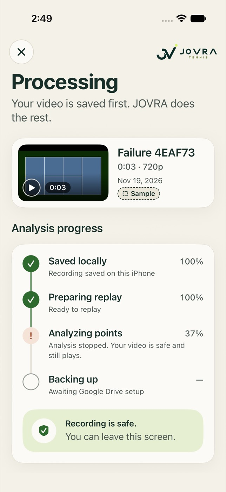
Reviewer: Claude (T27 agent) — matches the timeline structure; failure is shown with an attention-filled "!" plus the words "Analysis stopped. Your video is safe and still plays." so meaning never rides on colour; the other stages stay done.
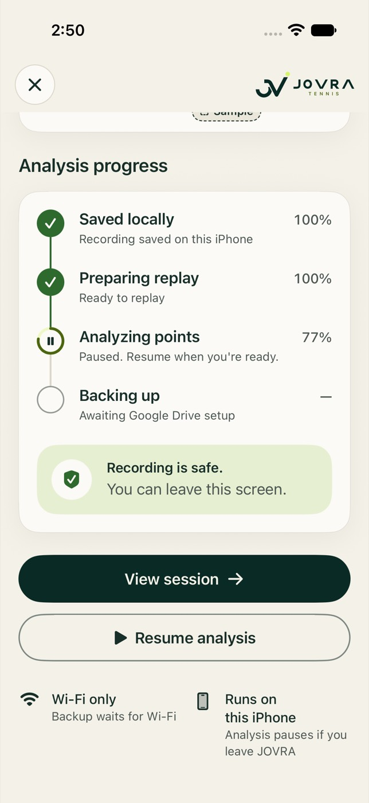
Reviewer: Claude (T27 agent) — matches the reference's actions: forest "View session →" with the secondary analysis control (here "Resume analysis" after a pause) and the two-item status row; the second item states the iOS 18 / refused continued-processing path, "Analysis pauses if you leave JOVRA", instead of the demo-only line.
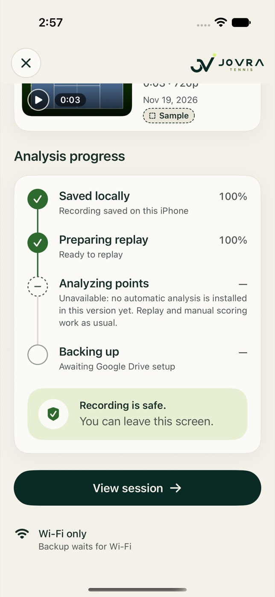
Reviewer: Claude (T27 agent) — matches the reference's lower half: forest View session button, then the Wi-Fi status item; no pause control is offered because nothing can run.
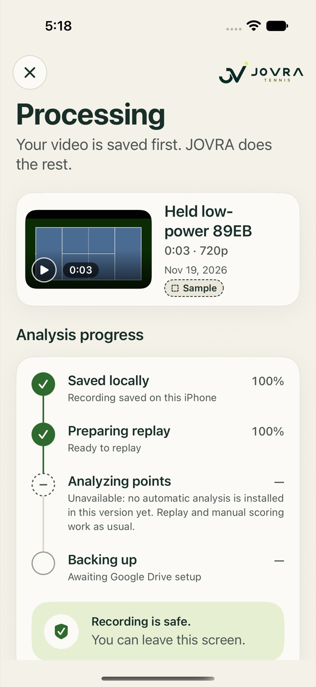
Reviewer: Claude (T27 agent) — matches the layout under an injected Low Power Mode on battery (-processingDevice lowPowerOnBattery): prepare replay still finishes (the hold applies to analysis only), and with no analyzer the analyze row reads Unavailable with its reason instead of "Waiting for a charger while Low Power Mode is on"; no Pause analysis and no "Runs on this iPhone" line.
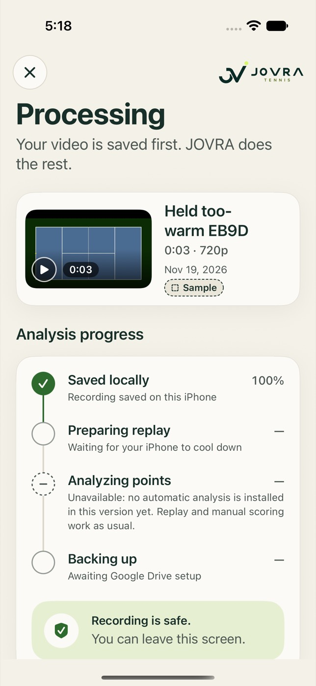
Reviewer: Claude (T27 agent) — matches the layout under an injected serious thermal state (-processingDevice tooWarm): the hold copy "Waiting for your iPhone to cool down" shows on Preparing replay, where it applies; the analyze row stays Unavailable with its reason.
Reviewer: Claude (T27 agent) — matches the layout; with no analyzer registered the stage shows a dashed unavailable indicator, an em dash instead of a percentage, and the stated reason, rather than the reference's fabricated 62%.